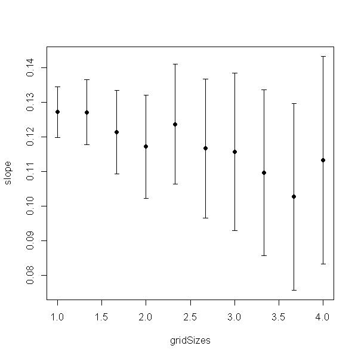

Appendix S4
Supporting information in Valcu, M., Dale, J., Kempenaers, B. rangeMapper: A platform for the study of macroecology of life history traits, Global Ecology and Biogeography, in press (2011)
Case study 3: The influence of grid size on the relationship between species richness and body size

|
This script runs with R version 2.15.1 (2012-06-22) & rangeMapper 0.1-7 |
require(rangeMapper) # 1) SET UP PROJECT td = tempdir() #Location of the vector(*.shp) breeding ranges on disk branges = system.file(package = "rangeMapper", "extdata", "wrens", "vector_combined") # Define grid size vector of increasing grid sizes. gridSizes = round(seq(from = 1, to = 4, length.out = 10), 2) # Load life history data data(wrens)
# 2) Perform log10(median_body_mass) ~ sqrt(species_richness) regression
# for each grid size
output = list()
for( i in 1:length(gridSizes) ) {
dbcon = rangeMap.start(file = "temp.sqlite", dir = td, overwrite = TRUE)
global.bbox.save(con = dbcon, bbox = branges)
# The grid size is set along the values in 'gridSizes'
gridSize.save(dbcon, gridSize = gridSizes[i])
canvas.save(dbcon)
processRanges(spdf = r, con = dbcon, ID = "sci_name", metadata = rangeTraits() )
bio.save(con = dbcon, loc = wrens, ID = "sci_name")
# When rangeMap.save is called without extra arguments species richness
# is saved by default
rangeMap.save(dbcon)
rangeMap.save(dbcon, FUN = 'median', biotab = "wrens", biotrait = "body_mass", tableName = "median_body_mass")
map = rangeMap.fetch(dbcon,
c("species_richness", "median_body_mass"))
map = as(map, "SpatialPointsDataFrame")
map = map[!is.na(map$median_body_mass) &
!is.na(map$species_richness), ]
# Perform OLS regression and save the output
# NOTE: In order to perform a spatial simultaneous autoregressive error regression
# see 'errorsarlm ' function and the auxiliary neighbours list functions in 'spdep' package.
output[[i]] = lm(log10(median_body_mass) ~ sqrt(species_richness), data= map)
dbDisconnect(dbcon)
}
# 3) Extract regression parameters
prm = lapply(output, function(x) data.frame(slope = coef(x)[2], ci2.5 = confint(x)[2,1], ci97.5 = confint(x)[2,2]) )
prm = do.call(rbind, prm)
# 4) PLOT
if(!require(Hmisc) ) stop("package Hmisc is required for plotting")
with(prm, errbar(gridSizes, slope, ci2.5, ci97.5) )

Website built with R version 2.15.1 (2012-06-22) and the package “ascii” version 2.1 |